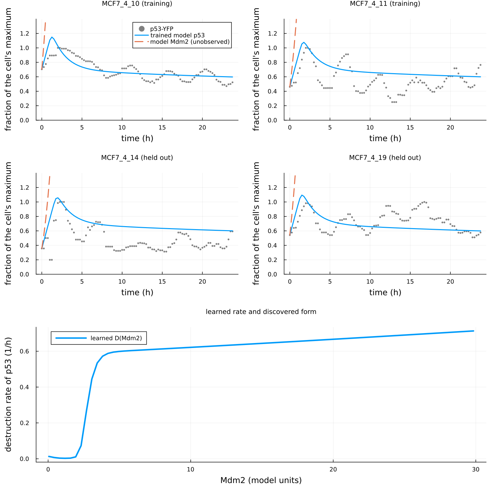

Case study: the p53–Mdm2 loop in single cells (measured data, p53 observed)
This page runs the one-call workflow on measured single-cell data of the p53–Mdm2 negative-feedback loop: p53-YFP traces of MCF7 cells after ionizing radiation, one cell per experiment, with Mdm2 treated as an unobserved state. It is a partially observed case study and therefore a weaker test than the two-reporter study that was planned (see below); the second state enters only through the model. Nothing on this page runs in the test suite or in CI (it needs network access for a 200 MB download and about an hour of training); every number comes from the run described in Results, in this environment.
Data access, in the order tried
- Geva-Zatorsky et al. (2006), Molecular Systems Biology 2:2006.0033, supplementary material. The publisher's page (
www.embopress.org) answers automated requests with a bot-challenge page; the PubMed Central copy (PMC1681500) lists "Supplementary Figures and Information" and a "Supplementary Movie" and no data table. The per-cell nuclear p53-CFP and Mdm2-YFP traces of that study are not deposited. - Later Lahav-laboratory deposits with both reporters. Stewart-Ornstein and Lahav (2017), Cell Systems 5:410 (PMC5687840): p53-YFP only, Mdm2 by qPCR, a supplementary PDF and image-analysis code on GitHub. Zenodo, Dryad, and Figshare searches for p53 and Mdm2 single-cell traces returned no deposit with an Mdm2 reporter (the Zenodo records of Reyes et al. 2018 are restricted raw movies of a p53 reporter). The Loewer-laboratory Molecular Systems Biology 2025 study has source data on BioStudies (p53 reporter, pulsed stimuli). The Lahav-laboratory site links no data.
- A single-reporter p53 dataset with Mdm2 unobserved: the p53 dataset inside the CC BY 4.0 deposit of Jacques et al. (2021), used here. This is the third option of the plan, and the case study is partially observed because of it.
Data
- Source:
p53_DoseCellLine.zipinsidedata_forCNN.zipof the Mendeley Data deposit "CODEX, a neural network approach to explore signaling dynamics landscapes", version 2 (2021-02-01), doi:10.17632/4vnndy59fp.2, the supporting data of Jacques, M.-A., Gagliardi, P. A., Pertz, O., and Dobrzyński, M. (2021), Molecular Systems Biology 17:e10026, doi:10.15252/msb.202010026. The deposit describes the p53 data as "kindly provided by Galit Lahav and Jacob Ornstein-Stewart"; they are the single-cell traces of Stewart-Ornstein, J. and Lahav, G. (2017), "Dynamics of p53 in response to DNA damage vary across cell lines and are shaped by efficiency of DNA repair and activity of the kinase ATM", Science Signaling 10, eaah6671, doi:10.1126/scisignal.aah6671. - URL of the archive:
https://data.mendeley.com/public-files/datasets/4vnndy59fp/files/ff44cff2-8004-46a2-805a-e78afab41c3d/file_downloaded(207,594,480 bytes, SHA-25634562085ca7a3eaf0693d6a752e0da521f05ad6bc338e136f8208a209f2e29a7); the innerp53_DoseCellLine.zip(818,759 bytes, SHA-2568335f946f691e67f07f8fa658e3744460083585cd22b7fcadcccfcfe9e81f3df) holdsdataset.csv,classes.csv, andid_set.csv. - Format: CSV, one row per cell with an id, a class, and 96 values of the nuclear p53-YFP abundance (arbitrary fluorescence units) at 15 min intervals from 0 to 1425 min after irradiation (23.75 h); 3,825 cells in 60 classes, 12 cell lines (A498, A549, H460, HCT116, LOX-IMVI, MALME3, MCF7, SK-MEL5, U2OS, UACC257, UACC62, UO31) at 1, 2, 4, 6, and 8 Gy. MCF7: 98, 85, 60, 52, and 50 cells at the five doses. One reporter (p53-YFP); no Mdm2 measurement.
- Licence: the deposit is CC BY 4.0. Its licence text adds that further permission may be required for content identified as belonging to a third party, and the p53 traces are identified as provided by a third party, so they are not redistributed with the package:
examples/p53_mdm2/download_data.jldownloads the archive from the deposit, verifies both checksums, and unpacks the three files intoexamples/p53_mdm2/data/(not committed). Cite the deposit and both papers when using the data.
Preprocessing
examples/p53_mdm2/preprocess.jl does the following, fixed before the first run:
- Cell line MCF7, the line of the 2006 study, at 4 Gy. The 2006 study used 5 Gy, which is not among the deposit's doses; of the two nearest, the lower one is taken because the 2017 study reports pulses broadening into a single peak at higher doses.
- Oscillating cells: at least 3 peaks in the 24 h, a peak being a local maximum that exceeds both neighbouring minima by at least 10% of the trace's maximum and lies at least 2 h after the previous counted peak. The 2017 study reports autocorrelations rather than a per-cell rule, so this written rule is applied uniformly. 49 of the 60 cells pass.
- Each trace is divided by its own maximum, so p53 is in units of the cell's maximum fluorescence. Time is in hours. Nothing is smoothed, trimmed, or interpolated; the 96 points enter as measured, on the grid they share.
- Mdm2 is unobserved: its observation row is
NaNand masked out of the loss, the residuals, and the identifiability diagnostic; its initial value is set to the cell's normalised p53 at t = 0 (both states start at the same normalised level), a stated assumption. - The first 40 passing cells in file order are used (a cap for runtime); every fifth one is held out (8 cells, 20%), and the held-out cells are placed last.
Model
\[\frac{dP}{dt} = k_{\mathrm{prod}} - D(M)\,P, \qquad \frac{dM}{dt} = k_m P - k_{dm} M .\]
Known: constant production of P; production of M proportional to P, the linear form shared by the models of Geva-Zatorsky et al. (2006), whose variants differ in delays and saturation of the p53 arm rather than in the form of Mdm2 production; linear degradation of M. Unknown: the per-concentration destruction rate of P regulated by M, declared as a reaction with known = false and the edge P ← M. In the 2006 models this term is Mdm2-dependent degradation of p53, proportional to M in the simplest form and saturating in M in others; the discovered rational form is compared with that qualitatively. Coefficients are in normalised fluorescence units (fractions of each cell's maximum p53; Mdm2 in the model's own units, set by k_m) per hour, and the production/destruction scale is not separately identifiable: a common factor on k_prod, k_m, and D leaves the p53 trajectory unchanged, which the identifiability diagnostic reports.
Protocol
examples/p53_mdm2/run_case_study.jl calls discover_unknown_terms twice with the reference defaults (warm-up on the first training cell, Adam 100 then BFGS 50, bootstrap 8, discovery seed 3), once without and once with stability_selection = StabilitySelection() (100 resamples, τ = 0.8), the 8 held-out cells passed as holdout = 8, the same random seed. Because M is never observed, the learned rate is sampled on the range of the trained model's own M trajectories over the training cells, widened by 10% on each side, 80 points (regulator_grid, a keyword added for this case), instead of on an observed grid. Nothing is tuned per cell. The figure is drawn by examples/p53_mdm2/plot_case_study.jl.
Results
Before 0.17.2, discover_unknown_terms trained its warm-up on the unobserved Mdm2 row as if it had been measured (the row is NaN), so the warm-up loss was NaN, every adjoint solve of its 100 Adam steps exited on NaN (204 solver warnings in the 0.13 log), and the joint fit started from parameters moved by a meaningless gradient; and the identifiability diagnostic kept the Jacobian rows of the unobserved Mdm2 entries in the Fisher information and in the production/destruction cosine. The fix (changelog, 0.17.2) changed the trained model, the diagnostic and the learned rate on this page, and the pre-fix numbers were reproduced exactly with the pre-fix code before being replaced. What changed: training loss 0.0625 → 0.0689; per-cell RMSE 0.243 → 0.255 (training) and 0.187 → 0.194 (held out); fitted k_prod 0.45 → 0.41, k_m 2.90 → 1.83, k_dm 0.0155 → 0.0111 (Mdm2 half-life 45 h → 62 h); collinearity 0.9997 → 0.9905 and Fisher condition number 3,973 → 23,700; the model's Mdm2 range 0.05–43.4 → 0.05–29.8 model units; the learned rate's rise moved from a broad step between 2 and 7 units to a sharp one between 2 and 4. What did not change: the fit is a first pulse followed by a plateau, the diagnostic flags the production/destruction scale as not separately identifiable, and no rational rate is accepted (DenominatorUnsafe). The figure was redrawn from the new run.
Run on 2026-09-13 (HybridKinetics 0.17.2) with Julia 1.10.12, OrdinaryDiffEq 7.8.1, SciMLSensitivity 7.119.3, Lux 1.31.4, Optimization 5.9.0, Zygote 0.7.13 (SciMLBase 3.51.0), 4 cores, with the pre-fix control run training alongside: 1,016 s for the run with the reference defaults and 933 s for the run with stability selection (the same training; the two runs give the same trained model, loss 0.0689). Cells: 40 of the 49 passing cells of the 60 MCF7 cells at 4 Gy; 32 training, 8 held out.
Training. The hybrid model reproduces the first p53 pulse of every cell and then settles at a constant level near 0.6 of the cell's maximum; it does not reproduce the later pulses. Root-mean-square error of the trained model's p53 against the data, in fractions of the cell's maximum: 0.255 over the 32 training cells and 0.194 over the 8 held-out cells (per cell from 0.09 to 0.35). Fitted parameters, per hour: k_prod 0.41, k_m 1.83, k_dm 0.0111, that is, a half-life of Mdm2 in the model of about 62 h, so the model's Mdm2 rises monotonically through the 24 h (from the cell's initial p53 level to about 30 model units) instead of pulsing; with an Mdm2 that never comes down there is no negative feedback loop left to oscillate, and the trained model is a first pulse followed by a plateau. The data do oscillate (every selected cell has at least three peaks); the model class found a non-oscillating fit to their mean level. A two-state negative-feedback loop without a delay or an intermediate species cannot sustain oscillations (the 2006 study's own model includes one), so the plateau is a limitation of the assumed known structure and of the unobserved regulator, not evidence about the discovery step.
Identifiability. The diagnostic flags the edge: correlation 1.000 between k_prod and the other parameters in the Fisher information, collinearity 0.9905 between the production rate and the scale of the unknown term, Fisher condition number 23,700, both computed over the observed p53 entries only. As stated above, the production/destruction scale is not separately identifiable from p53 alone; the diagnostic reports exactly that.
Discovery: no rational rate was accepted. With the reference defaults and with stability selection, the discovery returned DenominatorUnsafe: the sparse implicit fit selected a denominator that changes sign on the sample domain, and the safety check refused the candidate. There is no discovered equation, no hybrid residual, and no selection-frequency table (the stage runs after a candidate exists).
The learned rate. Sampled on the range of the model's Mdm2 over the training cells (0.05 to 29.8 model units, 80 points), the learned per-concentration destruction rate of p53 is close to zero below 2 model units (0.013 per hour at Mdm2 near 0, 0.003 at 1), rises sharply between 2 and 4 (0.07 at 2.3, 0.27 at 2.7, 0.44 at 3.1, 0.57 at 3.8), and then grows slowly: 0.60 at 5, 0.63 at 11, 0.66 at 19, 0.71 at 30. Its shape, a step followed by a slow ramp, is the shape the safety check could not fit with a positive rational denominator at degree 2 on this domain.

Comparison with the literature form. The Mdm2-mediated degradation of p53 in the models of Geva-Zatorsky et al. (2006) is increasing in Mdm2, linear in the simplest model and saturating in others. The learned rate is increasing and saturating in the model's Mdm2, which agrees with that qualitatively; but the model's Mdm2 is not the measured Mdm2, and the trained model does not oscillate, so the agreement is between a learned function of an unobserved, non-pulsing state and a literature form; it does not identify the term. No discovered rational form exists to compare.
What this shows and does not show
The workflow runs end to end on measured single-cell data with an unobserved state and the benchmark defaults, and its two safeguards behave as intended: the identifiability diagnostic flags the non-identifiable production/destruction scale, and the denominator-safety check refuses a rational rate with a pole instead of reporting it. The result is negative for mechanism recovery: the trained two-state model does not reproduce the p53 oscillations, its Mdm2 is an accumulating latent variable rather than a pulsing one, and no rational rate was accepted. Three limits of this case study explain why, and none was tuned away, since the protocol forbids per-cell tuning and the choices were fixed beforehand: Mdm2 is never measured, so the second state is constrained only through p53; the model has no transcriptional delay, and the 2006 study shows that the linear loop without a delay does not oscillate with the measured period; and the initial Mdm2 of every cell is an assumption. What a stronger test needs is what the plan asked for first: per-cell traces of both p53 and Mdm2, which were not accessible from any source tried. With both reporters measured, the same scripts run unchanged apart from the observation mask and the regulator grid.